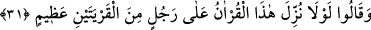

şerifte şöyle buyrulur:
“İstemeyenler dışında ümmetimin tamamı cennete girerler. Bunun üzerine: «Ey
Allah’ın Rasûlü, cennete girmeyi kim istemez ki?» denildi. Peygamber Efendimiz
(s.a.): «Bana itâat edenler cennete girer. Bana karşı gelenler cenneti istememiş
demektir»” buyurdu.[156]
Burada Peygamberimiz (s.a.) “bana itâat eden” sözüyle ve “kim beni getirmiş
olduğum îman, ilim ve amelde tasdik ederse” şeklinde bir mânâ murâd etmiştir. “Karşı
gelenler” sözüyle de yine “bu konularda bana isyân eder, karşı gelirse” anlamını
kasdetmiştir. Buna göre hadisteki “ümmet” kelimesiyle hem ümmet-i dâvet hem ümmet-i
icâbet hepsi murâd edilmiş olup daha sonra ümmet-i dâvet istisnâ edilmiştir. Bunun
îzâhı şöyledir:
Ümmet bazen bütün insanlara şâmil mânâda kullanılır. Buna ümmet-i dâvet denilir.
Bazen de yalnız müminlere şâmil olacak bir mânâda kullanılır. Buna da ümmet-i icâbet
denilir. Ümmet-i icâbet aynı zamanda ümmeti dâvettir. Küllî olarak bunun aksi olmaz.
Yani ümmet-i dâvet ümmet-i icâbet değildir. Öyleyse sen haktan yüz çevirmekten sakın
ve bakâya sarıl ki me’vâ cennetinde mutlu olasın. Zîrâ kurtuluş yolu tâatler ve sâlih
amellerdir. Kim boş kuruntulara aldanır, kuruntu ve hayallerin peşine düşerse muhakkak
ki açık bir ziyâna uğramıştır. Allah Teâlâ’dan bizleri kitâb-ı mübîninde emrettiği gibi
yapmasını diliyoruz. Âmîn.
31. Ve dediler ki: Bu Kur’an iki şehirden bir büyük adama indirilse olmaz mıydı?
Mekkeliler “dediler ki: Bu Kur’an iki şehirden” Mekke ve Tâif’in birinden, mal ve
mevki itibarıyla “bir büyük adama” Mekke’de Velid b. Muğire el-Mahzûmi’ye yahut
Tâif’te Urve b. Mesûd es-Sakafî’ye “indirilse olmaz mıydı?”
Bu ifâde “(O denizlerin) ikisinden de inci ve mercan çıkar” (er-Rahmân, 55/22)
âyeti gibidir. Çünkü iki denizin sadece birinden (tuzlu olandan) inci ve mercan çıkar,
(tuzsuz olandan çıkmaz). Burada “min” ibtidâ içindir. Bir adamın iki kentten birden
olması uzaktır. Bu yüzden bir muzaf takdir edilmiş ve: “iki kentin birinden büyük bir
adama” mânâsı kasdedilmiştir. Ulemâdan burada muzaf takdir etmeyenler de vardır.
Bunlar şöyle derler: Allah Teâlâ her iki kentten de sayılabilen büyük bir adamı murad
etmiştir. Bu kişi, bahsi geçen Urve b. Mesûd es-Sakafî’dir. Çünkü bu adam hem
Mekke’de hem de Tâif’te iskân ve ikâmet etmekte idi. Mekke’de ticâret malları vardı.
Bu itibarla Mekke esnafından sayılırdı. Ayrıca Tâif’te de bağ, bahçe ve arâzîleri vardı.
Bu bakımdan Mekke ve Tâif’e sık sık gidip bu iki kent arasında mekik dokurdu. Bu
itibarla kendisi sanki hem Mekke ehlinden hem de Tâif ehlinden sayılmış oldu.
Fakir (Bursevî) der ki: Burada gizli bir vecih daha vardır ki o da şudur: Bir insanın